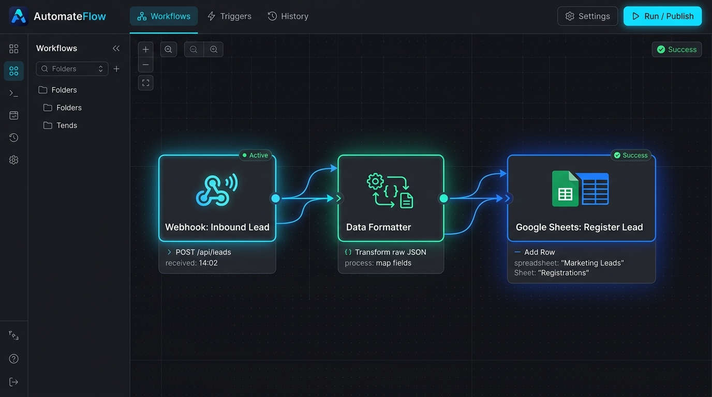
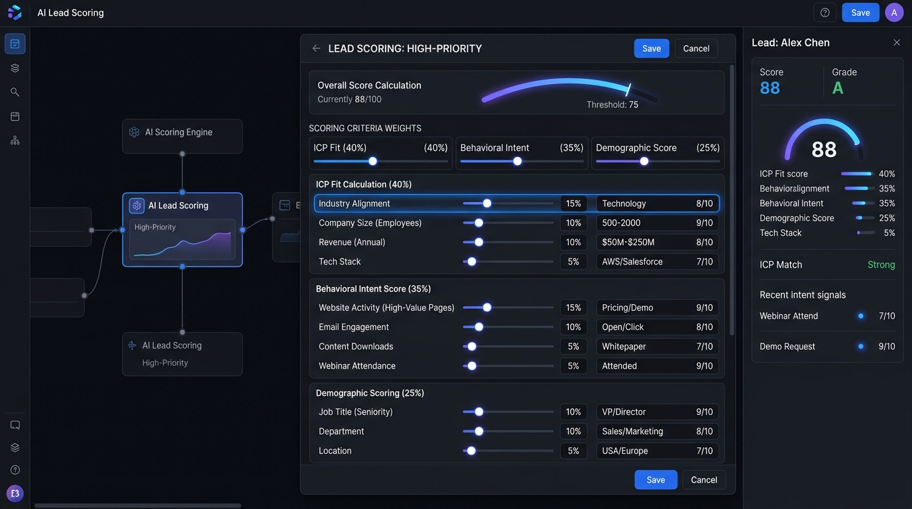
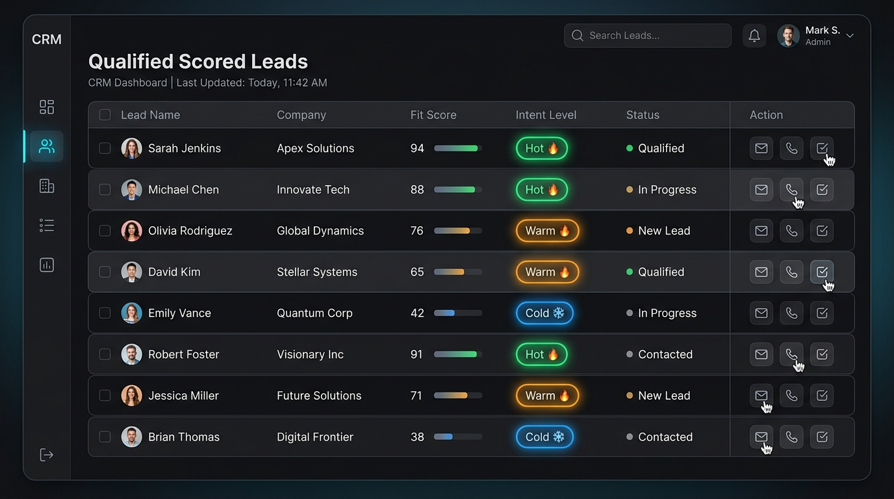
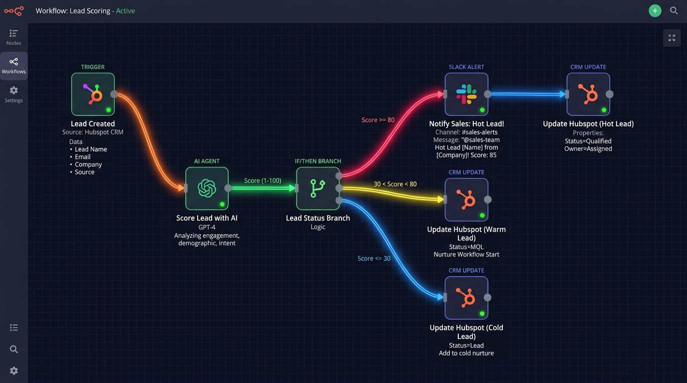

Automated Lead scoring workflow.
AI Workflows Project
The problem
In modern sales and marketing operations, businesses receive a high volume of inbound inquiries across multiple channels—landing pages, ad campaigns, and content downloads. However, sales teams face significant challenges qualifying leads manually:
- Delayed Response Times: Critical response windows are missed as reps manually review and sort incoming prospects.
- Misaligned Effort: Account executives spend hours on low-intent or out-of-market inquiries instead of high-probability enterprise buyers.
- Inconsistent Qualification: Qualification standards vary across team members without a standardized, data-driven scoring framework.
The solution
An intelligent, end-to-end Automated Lead Scoring Workflow designed to eliminate manual bottlenecks. The architecture ingests leads in real time, enriches them with firmographic data, evaluates intent using an AI scoring engine, and dynamically categorizes prospects into actionable tiers. Hot leads trigger instant sales alerts with complete context, while nurture leads receive tailored automated communication.
How it works.
Step - 1. - Historical Data analysis (Trend analysis).
Before developing the logic, a comprehensive retrospective analysis was conducted on historical CRM records. By examining past closed-won vs. closed-lost opportunities, we pinpointed the exact attributes and behavioral markers that correlate most strongly with conversion. This trend analysis revealed key predictive indicators—such as target industry sectors, company size thresholds (500–2,000 employees), decision-maker job seniority, and high-intent website actions (pricing page views, demo requests).
Step - 2 - Development of the scoring logic.
Using insights from the trend analysis, a structured multi-dimensional scoring model was constructed. The model balances demographic fit with behavioral intent across a 100-point scale:
- Ideal Customer Profile (ICP) Fit (40%): Company size, annual revenue range, industry alignment, and technology stack.
- Behavioral Intent Score (35%): High-value website visits, whitepaper downloads, webinar attendance, and demo form inquiries.
- Demographic Fit (25%): Job title seniority (VP/Director/C-Suite), functional department, and geographic location.
Step - 3 - workflow 1 - automated register

Workflow 1 serves as the ingestion and registration gateway. When a prospect submits a form or trigger event, an incoming Webhook captures the raw payload. The Data Formatter node standardizes the JSON fields, normalizes names, emails, and company metadata, and immediately logs the newly registered lead into the primary database / Google Sheet with an active "Pending Scoring" status.
step - 4 - workflow 2 - Automated Lead scoring:



Workflow 2 handles the intelligent evaluation and operational routing. The AI Agent Node calculates composite scores based on weighted ICP fit, behavioral activity, and intent semantics. The decision engine branches leads into distinct tiers:
- Hot Leads (Score ≥ 80): Dispatches immediate high-priority notifications to sales via Slack/Teams with contact details and AI summary, and auto-assigns the lead in HubSpot.
- Warm Leads (30 < Score < 80): Enters targeted automated marketing nurture campaigns and updates CRM lifecycle stages.
- Cold Leads (Score ≤ 30): Tagged for low-touch educational newsletters to preserve sales bandwidth.
Conclusion and key Takeaways.
Implementing this two-tier automated lead scoring workflow created measurable business transformation across sales velocity and pipeline quality:
- Sub-Minute Speed-to-Lead: Hot enterprise leads are notified to account executives in under 60 seconds, drastically increasing contact rates.
- 70% Reduction in Manual Triage: Eliminates repetitive spreadsheet tracking and guesswork for the sales team.
- Higher Win Rates: Focuses high-touch sales reps exclusively on accounts with proven readiness and high purchase intent.
- Scalable Architecture: The modular webhook-driven workflow seamlessly handles surges in marketing campaign volume without manual intervention.